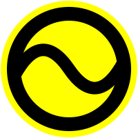
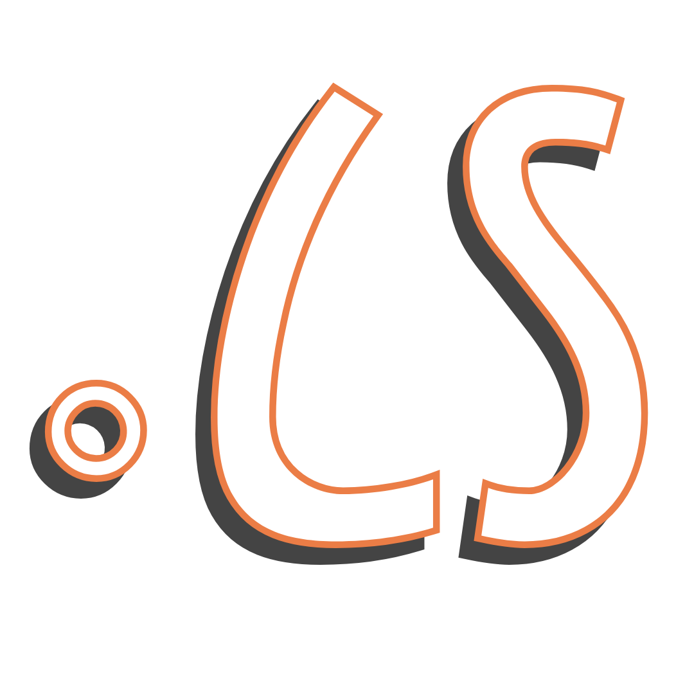
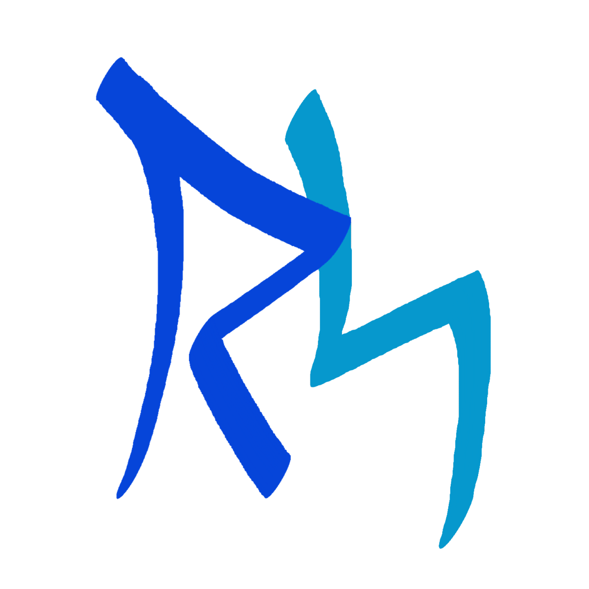

About me
Charismatic introvert. I love dreaming up workarounds and positioning product value. I'm drawn to ambiguous environments where I can drive clarity and make the complex feel intuitive.
Experience
I earned a BA in Communications (Film Production focus) and got some certifications that opened the door to tech. I've always bridged Customer and Product orgs. I'm comfortable working with developers as well as business / C-suite.
Atlanta Las Vegas
↓ ↓
2015 ─┬─►──────────► 2017 ─┬─►────────┬─► 2019 ──►─────┬─────► 2021 ──►┬──────────► 2023 ─┬─►──────────► 2025
│ │ │ │ │ │
Implementation Customer Technical Program Product Exploring New
Manager Success Writer Manager Manager Opportunities
Side Projects
They say the best way to learn is to teach, so that's usually what I do.
GunDB Tutorial
Gun is a decentralized graph database. I made a couple of video tutorials as I learned how to use it myself. This video is a good example of how I break down large concepts and teach them step by step.

Occidental LanguageOccidental / Interlingue is an auxiliary language created in 1922 by an Estonian named Edgar de Wahl. I created this website and several web apps to help revive the language community.

Shavian SchoolShavian is an alternative alphabet for English, funded by George Bernard Shaw. There was no learning resource for this, so I made one. It showcases my favorite teaching/learning style.

Rune SchoolInspired by Shavian, this website and accompanying tools teaches a new writing system for English based on Old English runes.
Current Interests
- Tai Chi
- Photography
- Swing Dancing
- American Sign Language
- Nostr decentralized protocol